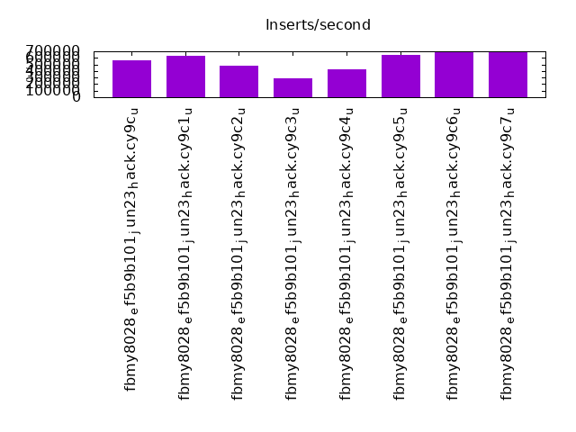
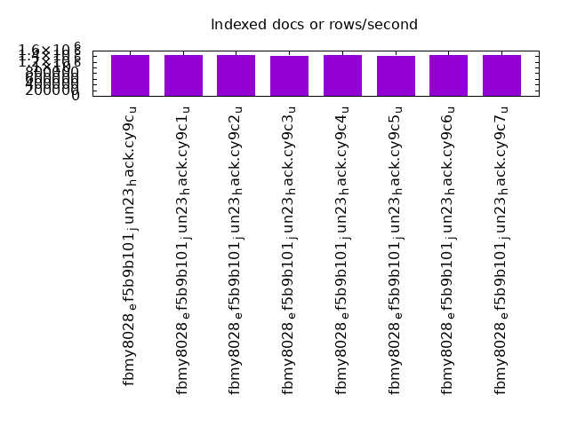
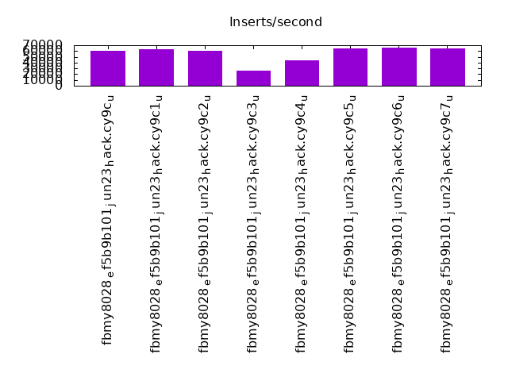
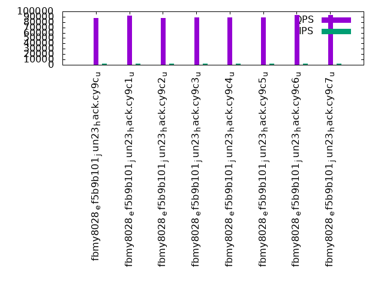
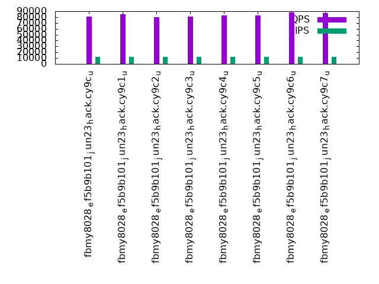
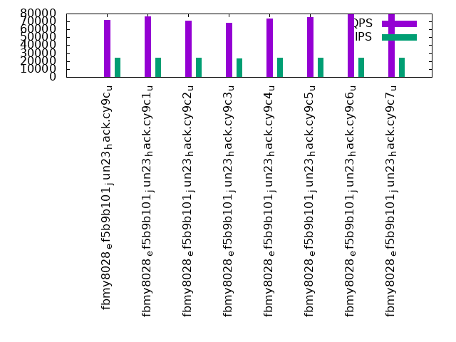

This is a report for the insert benchmark with 480M docs and 24 client(s). It is generated by scripts (bash, awk, sed) and Tufte might not be impressed. An overview of the insert benchmark is here and a short update is here. Below, by DBMS, I mean DBMS+version.config. An example is my8020.c10b40 where my means MySQL, 8020 is version 8.0.20 and c10b40 is the name for the configuration file.
The test server has 80 cores with hyperthreads enabled, 256G RAM and fast storage. The benchmark was run with 24 client and there were 1 or 3 connections per client (1 for queries or inserts without rate limits, 1+1 for rate limited inserts+deletes). There are 24 tables, with a client per table. It loads 480M rows without secondary indexes, creates secondary indexes, then inserts 1200M rows with a delete per insert to avoid growing the table. It then does 3 read+write tests for 3600s each that do queries as fast as possible with 100, 500 and then 1000 inserts/second/client concurrent with the queries and 1000 deletes/second to avoid growing the table. The database is cached by RocksDB
The tested DBMS are:
The numbers are inserts/s for l.i0 and l.i1, indexed docs (or rows) /s for l.x and queries/s for q*.2. The values are the average rate over the entire test for inserts (IPS) and queries (QPS). The range of values for IPS and QPS is split into 3 parts: bottom 25%, middle 50%, top 25%. Values in the bottom 25% have a red background, values in the top 25% have a green background and values in the middle have no color. A gray background is used for values that can be ignored because the DBMS did not sustain the target insert rate. Red backgrounds are not used when the minimum value is within 80% of the max value.
| dbms | l.i0 | l.x | l.i1 | q100.1 | q500.1 | q1000.1 |
|---|---|---|---|---|---|---|
| fbmy8028_ef5b9b101_jun23_hack.cy9c_u | 562720 | 1433134 | 60432 | 87738 | 80814 | 72124 |
| fbmy8028_ef5b9b101_jun23_hack.cy9c1_u | 634082 | 1454848 | 63125 | 92313 | 85024 | 76070 |
| fbmy8028_ef5b9b101_jun23_hack.cy9c2_u | 478088 | 1446084 | 60003 | 87252 | 80274 | 71008 |
| fbmy8028_ef5b9b101_jun23_hack.cy9c3_u | 289505 | 1416224 | 25858 | 88772 | 81070 | 68222 |
| fbmy8028_ef5b9b101_jun23_hack.cy9c4_u | 429722 | 1454848 | 43727 | 88831 | 83100 | 73609 |
| fbmy8028_ef5b9b101_jun23_hack.cy9c5_u | 645161 | 1424629 | 64568 | 88507 | 82601 | 75721 |
| fbmy8028_ef5b9b101_jun23_hack.cy9c6_u | 687679 | 1450453 | 65865 | 93052 | 87568 | 79422 |
| fbmy8028_ef5b9b101_jun23_hack.cy9c7_u | 686695 | 1441742 | 64669 | 93160 | 87427 | 79647 |
This table has relative throughput, throughput for the DBMS relative to the DBMS in the first line, using the absolute throughput from the previous table. Values less than 0.95 have a yellow background. Values greater than 1.05 have a blue background.
| dbms | l.i0 | l.x | l.i1 | q100.1 | q500.1 | q1000.1 |
|---|---|---|---|---|---|---|
| fbmy8028_ef5b9b101_jun23_hack.cy9c_u | 1.00 | 1.00 | 1.00 | 1.00 | 1.00 | 1.00 |
| fbmy8028_ef5b9b101_jun23_hack.cy9c1_u | 1.13 | 1.02 | 1.04 | 1.05 | 1.05 | 1.05 |
| fbmy8028_ef5b9b101_jun23_hack.cy9c2_u | 0.85 | 1.01 | 0.99 | 0.99 | 0.99 | 0.98 |
| fbmy8028_ef5b9b101_jun23_hack.cy9c3_u | 0.51 | 0.99 | 0.43 | 1.01 | 1.00 | 0.95 |
| fbmy8028_ef5b9b101_jun23_hack.cy9c4_u | 0.76 | 1.02 | 0.72 | 1.01 | 1.03 | 1.02 |
| fbmy8028_ef5b9b101_jun23_hack.cy9c5_u | 1.15 | 0.99 | 1.07 | 1.01 | 1.02 | 1.05 |
| fbmy8028_ef5b9b101_jun23_hack.cy9c6_u | 1.22 | 1.01 | 1.09 | 1.06 | 1.08 | 1.10 |
| fbmy8028_ef5b9b101_jun23_hack.cy9c7_u | 1.22 | 1.01 | 1.07 | 1.06 | 1.08 | 1.10 |
This lists the average rate of inserts/s for the tests that do inserts concurrent with queries. For such tests the query rate is listed in the table above. The read+write tests are setup so that the insert rate should match the target rate every second. Cells that are not at least 95% of the target have a red background to indicate a failure to satisfy the target.
| dbms | q100.1 | q500.1 | q1000.1 |
|---|---|---|---|
| fbmy8028_ef5b9b101_jun23_hack.cy9c_u | 2381 | 11907 | 23828 |
| fbmy8028_ef5b9b101_jun23_hack.cy9c1_u | 2381 | 11907 | 23828 |
| fbmy8028_ef5b9b101_jun23_hack.cy9c2_u | 2381 | 11907 | 23828 |
| fbmy8028_ef5b9b101_jun23_hack.cy9c3_u | 2382 | 11911 | 23613 |
| fbmy8028_ef5b9b101_jun23_hack.cy9c4_u | 2381 | 11907 | 23834 |
| fbmy8028_ef5b9b101_jun23_hack.cy9c5_u | 2381 | 11911 | 23828 |
| fbmy8028_ef5b9b101_jun23_hack.cy9c6_u | 2381 | 11907 | 23834 |
| fbmy8028_ef5b9b101_jun23_hack.cy9c7_u | 2381 | 11907 | 23828 |
| target | 2400 | 12000 | 24000 |
l.i0: load without secondary indexes. Graphs for performance per 1-second interval are here.
Average throughput:
Insert response time histogram: each cell has the percentage of responses that take <= the time in the header and max is the max response time in seconds. For the max column values in the top 25% of the range have a red background and in the bottom 25% of the range have a green background. The red background is not used when the min value is within 80% of the max value.
| dbms | 256us | 1ms | 4ms | 16ms | 64ms | 256ms | 1s | 4s | 16s | gt | max |
|---|---|---|---|---|---|---|---|---|---|---|---|
| fbmy8028_ef5b9b101_jun23_hack.cy9c_u | 56.777 | 43.180 | 0.002 | 0.042 | 0.109 | ||||||
| fbmy8028_ef5b9b101_jun23_hack.cy9c1_u | 82.698 | 17.174 | 0.085 | 0.043 | 0.173 | ||||||
| fbmy8028_ef5b9b101_jun23_hack.cy9c2_u | 35.105 | 64.850 | 0.002 | 0.042 | 0.171 | ||||||
| fbmy8028_ef5b9b101_jun23_hack.cy9c3_u | 81.045 | 12.564 | 2.635 | 3.756 | nonzero | 0.301 | |||||
| fbmy8028_ef5b9b101_jun23_hack.cy9c4_u | 59.490 | 36.810 | 3.657 | 0.043 | 0.225 | ||||||
| fbmy8028_ef5b9b101_jun23_hack.cy9c5_u | 80.034 | 19.922 | 0.001 | 0.043 | 0.172 | ||||||
| fbmy8028_ef5b9b101_jun23_hack.cy9c6_u | 88.749 | 11.207 | nonzero | 0.043 | 0.099 | ||||||
| fbmy8028_ef5b9b101_jun23_hack.cy9c7_u | 88.594 | 11.362 | 0.001 | 0.043 | 0.115 |
Performance metrics for the DBMS listed above. Some are normalized by throughput, others are not. Legend for results is here.
ips qps rps rmbps wps wmbps rpq rkbpq wpi wkbpi csps cpups cspq cpupq dbgb1 dbgb2 rss maxop p50 p99 tag 562720 0 0 0.0 1807.6 121.2 0.000 0.000 0.003 0.221 347597 39.3 0.618 56 15.3 16.6 3.9 0.109 24176 14585 480m.fbmy8028_ef5b9b101_jun23_hack.cy9c_u 634082 0 0 0.0 2142.6 145.1 0.000 0.000 0.003 0.234 115585 40.7 0.182 51 18.7 20.1 6.3 0.173 27972 10191 480m.fbmy8028_ef5b9b101_jun23_hack.cy9c1_u 478088 0 0 0.0 1602.7 116.2 0.000 0.000 0.003 0.249 420609 34.8 0.880 58 15.4 16.8 4.1 0.171 20679 10190 480m.fbmy8028_ef5b9b101_jun23_hack.cy9c2_u 289505 0 0 0.0 1121.6 78.7 0.000 0.000 0.004 0.278 66043 19.1 0.228 53 16.2 17.5 4.8 0.301 2198 599 480m.fbmy8028_ef5b9b101_jun23_hack.cy9c3_u 429722 0 0 0.0 1428.6 108.1 0.000 0.000 0.003 0.258 218036 28.1 0.507 52 15.1 16.4 4.0 0.225 20676 3496 480m.fbmy8028_ef5b9b101_jun23_hack.cy9c4_u 645161 0 0 0.0 2266.3 174.4 0.000 0.000 0.004 0.277 225369 40.3 0.349 50 15.2 16.6 4.3 0.172 27972 22278 480m.fbmy8028_ef5b9b101_jun23_hack.cy9c5_u 687679 0 0 0.0 2385.2 178.9 0.000 0.000 0.003 0.266 129571 40.6 0.188 47 15.2 16.5 6.4 0.099 29670 25674 480m.fbmy8028_ef5b9b101_jun23_hack.cy9c6_u 686695 0 0 0.0 2420.6 178.1 0.000 0.000 0.004 0.266 129889 40.8 0.189 48 15.2 16.5 6.3 0.115 29670 25674 480m.fbmy8028_ef5b9b101_jun23_hack.cy9c7_u
l.x: create secondary indexes.
Average throughput:
Performance metrics for the DBMS listed above. Some are normalized by throughput, others are not. Legend for results is here.
ips qps rps rmbps wps wmbps rpq rkbpq wpi wkbpi csps cpups cspq cpupq dbgb1 dbgb2 rss maxop p50 p99 tag 1433134 0 30 0.2 1849.8 129.5 0.000 0.000 0.001 0.093 24391 26.7 0.017 15 32.4 33.8 33.4 0.003 NA NA 480m.fbmy8028_ef5b9b101_jun23_hack.cy9c_u 1454848 0 30 0.2 2108.2 144.1 0.000 0.000 0.001 0.101 26727 28.7 0.018 16 32.5 33.8 43.8 0.004 NA NA 480m.fbmy8028_ef5b9b101_jun23_hack.cy9c1_u 1446084 0 30 0.2 1898.2 133.5 0.000 0.000 0.001 0.095 25273 27.8 0.017 15 32.4 33.7 34.5 0.004 NA NA 480m.fbmy8028_ef5b9b101_jun23_hack.cy9c2_u 1416224 0 29 0.2 1847.7 129.7 0.000 0.000 0.001 0.094 25506 27.5 0.018 16 32.4 33.7 35.4 0.003 NA NA 480m.fbmy8028_ef5b9b101_jun23_hack.cy9c3_u 1454848 0 30 0.2 1860.2 132.4 0.000 0.000 0.001 0.093 23925 27.3 0.016 15 32.4 33.7 33.4 0.004 NA NA 480m.fbmy8028_ef5b9b101_jun23_hack.cy9c4_u 1424629 0 30 0.2 1842.7 131.3 0.000 0.000 0.001 0.094 23821 27.1 0.017 15 32.3 33.7 33.9 0.003 NA NA 480m.fbmy8028_ef5b9b101_jun23_hack.cy9c5_u 1450453 0 30 0.2 1876.2 132.1 0.000 0.000 0.001 0.093 23604 27.0 0.016 15 32.3 33.6 36.0 0.003 NA NA 480m.fbmy8028_ef5b9b101_jun23_hack.cy9c6_u 1441742 0 30 0.2 1833.8 129.0 0.000 0.000 0.001 0.092 24276 26.7 0.017 15 32.5 33.8 35.5 0.003 NA NA 480m.fbmy8028_ef5b9b101_jun23_hack.cy9c7_u
l.i1: continue load after secondary indexes created. Graphs for performance per 1-second interval are here.
Average throughput:
Insert response time histogram: each cell has the percentage of responses that take <= the time in the header and max is the max response time in seconds. For the max column values in the top 25% of the range have a red background and in the bottom 25% of the range have a green background. The red background is not used when the min value is within 80% of the max value.
| dbms | 256us | 1ms | 4ms | 16ms | 64ms | 256ms | 1s | 4s | 16s | gt | max |
|---|---|---|---|---|---|---|---|---|---|---|---|
| fbmy8028_ef5b9b101_jun23_hack.cy9c_u | 0.029 | 18.565 | 80.876 | 0.458 | 0.063 | 0.010 | 2.044 | ||||
| fbmy8028_ef5b9b101_jun23_hack.cy9c1_u | 0.027 | 22.664 | 76.910 | 0.356 | 0.042 | 0.002 | 1.291 | ||||
| fbmy8028_ef5b9b101_jun23_hack.cy9c2_u | 0.036 | 16.370 | 83.022 | 0.528 | 0.041 | 0.002 | 1.253 | ||||
| fbmy8028_ef5b9b101_jun23_hack.cy9c3_u | 0.025 | 16.016 | 68.329 | 11.886 | 3.743 | 0.001 | 1.139 | ||||
| fbmy8028_ef5b9b101_jun23_hack.cy9c4_u | 0.025 | 15.137 | 77.397 | 7.408 | 0.031 | 0.002 | nonzero | 6.115 | |||
| fbmy8028_ef5b9b101_jun23_hack.cy9c5_u | 0.025 | 18.980 | 80.988 | 0.006 | 0.179 | ||||||
| fbmy8028_ef5b9b101_jun23_hack.cy9c6_u | 0.026 | 21.096 | 78.874 | 0.005 | 0.140 | ||||||
| fbmy8028_ef5b9b101_jun23_hack.cy9c7_u | 0.027 | 19.056 | 80.912 | 0.005 | 0.192 |
Delete response time histogram: each cell has the percentage of responses that take <= the time in the header and max is the max response time in seconds. For the max column values in the top 25% of the range have a red background and in the bottom 25% of the range have a green background. The red background is not used when the min value is within 80% of the max value.
| dbms | 256us | 1ms | 4ms | 16ms | 64ms | 256ms | 1s | 4s | 16s | gt | max |
|---|---|---|---|---|---|---|---|---|---|---|---|
| fbmy8028_ef5b9b101_jun23_hack.cy9c_u | 0.028 | 18.476 | 80.964 | 0.459 | 0.063 | 0.010 | 2.044 | ||||
| fbmy8028_ef5b9b101_jun23_hack.cy9c1_u | 0.028 | 22.814 | 76.758 | 0.357 | 0.042 | 0.002 | 1.291 | ||||
| fbmy8028_ef5b9b101_jun23_hack.cy9c2_u | 0.037 | 16.167 | 83.221 | 0.531 | 0.041 | 0.002 | 1.253 | ||||
| fbmy8028_ef5b9b101_jun23_hack.cy9c3_u | 0.027 | 16.361 | 67.987 | 11.884 | 3.741 | 0.001 | 1.139 | ||||
| fbmy8028_ef5b9b101_jun23_hack.cy9c4_u | 0.027 | 15.889 | 76.675 | 7.376 | 0.031 | 0.002 | nonzero | 6.115 | |||
| fbmy8028_ef5b9b101_jun23_hack.cy9c5_u | 0.027 | 19.565 | 80.401 | 0.007 | nonzero | 0.279 | |||||
| fbmy8028_ef5b9b101_jun23_hack.cy9c6_u | 0.028 | 22.255 | 77.712 | 0.005 | nonzero | 0.287 | |||||
| fbmy8028_ef5b9b101_jun23_hack.cy9c7_u | 0.029 | 20.213 | 79.752 | 0.005 | nonzero | 0.296 |
Performance metrics for the DBMS listed above. Some are normalized by throughput, others are not. Legend for results is here.
ips qps rps rmbps wps wmbps rpq rkbpq wpi wkbpi csps cpups cspq cpupq dbgb1 dbgb2 rss maxop p50 p99 tag 60432 0 103 1.2 1209.8 78.3 0.002 0.020 0.020 1.327 183437 18.3 3.035 242 48.3 48.6 175.9 2.044 2697 50 480m.fbmy8028_ef5b9b101_jun23_hack.cy9c_u 63125 0 127 1.5 1270.0 81.9 0.002 0.024 0.020 1.329 74007 16.4 1.172 208 57.5 57.8 178.5 1.291 2747 150 480m.fbmy8028_ef5b9b101_jun23_hack.cy9c1_u 60003 0 126 1.3 1212.3 78.2 0.002 0.023 0.020 1.334 291795 20.1 4.863 268 41.1 41.4 178.2 1.253 2647 150 480m.fbmy8028_ef5b9b101_jun23_hack.cy9c2_u 25858 0 24 0.4 713.3 45.2 0.001 0.017 0.028 1.789 52450 8.5 2.028 263 42.0 42.3 175.9 1.139 350 100 480m.fbmy8028_ef5b9b101_jun23_hack.cy9c3_u 43727 0 36 0.7 1116.3 69.4 0.001 0.018 0.026 1.626 103964 13.1 2.378 240 39.0 39.3 177.5 6.115 2148 300 480m.fbmy8028_ef5b9b101_jun23_hack.cy9c4_u 64568 0 47 0.9 1637.0 104.0 0.001 0.014 0.025 1.650 123128 18.5 1.907 229 40.7 40.9 177.4 0.179 2697 2398 480m.fbmy8028_ef5b9b101_jun23_hack.cy9c5_u 65865 0 51 1.0 1656.1 105.3 0.001 0.015 0.025 1.637 78449 17.7 1.191 215 38.1 38.3 177.6 0.140 2747 2448 480m.fbmy8028_ef5b9b101_jun23_hack.cy9c6_u 64669 0 53 1.0 1631.9 104.2 0.001 0.015 0.025 1.649 77216 17.5 1.194 216 38.2 38.4 177.5 0.192 2697 2398 480m.fbmy8028_ef5b9b101_jun23_hack.cy9c7_u
q100.1: range queries with 100 insert/s per client. Graphs for performance per 1-second interval are here.
Average throughput:
Query response time histogram: each cell has the percentage of responses that take <= the time in the header and max is the max response time in seconds. For max values in the top 25% of the range have a red background and in the bottom 25% of the range have a green background. The red background is not used when the min value is within 80% of the max value.
| dbms | 256us | 1ms | 4ms | 16ms | 64ms | 256ms | 1s | 4s | 16s | gt | max |
|---|---|---|---|---|---|---|---|---|---|---|---|
| fbmy8028_ef5b9b101_jun23_hack.cy9c_u | 52.150 | 47.849 | 0.002 | nonzero | nonzero | 0.032 | |||||
| fbmy8028_ef5b9b101_jun23_hack.cy9c1_u | 61.782 | 38.215 | 0.002 | nonzero | nonzero | nonzero | nonzero | 0.310 | |||
| fbmy8028_ef5b9b101_jun23_hack.cy9c2_u | 50.219 | 49.779 | 0.002 | nonzero | nonzero | 0.020 | |||||
| fbmy8028_ef5b9b101_jun23_hack.cy9c3_u | 54.071 | 45.928 | 0.001 | nonzero | nonzero | 0.040 | |||||
| fbmy8028_ef5b9b101_jun23_hack.cy9c4_u | 54.261 | 45.738 | 0.001 | nonzero | nonzero | 0.021 | |||||
| fbmy8028_ef5b9b101_jun23_hack.cy9c5_u | 53.516 | 46.483 | 0.001 | nonzero | 0.007 | ||||||
| fbmy8028_ef5b9b101_jun23_hack.cy9c6_u | 63.095 | 36.904 | 0.001 | nonzero | nonzero | 0.024 | |||||
| fbmy8028_ef5b9b101_jun23_hack.cy9c7_u | 63.205 | 36.793 | 0.001 | nonzero | nonzero | 0.017 |
Insert response time histogram: each cell has the percentage of responses that take <= the time in the header and max is the max response time in seconds. For max values in the top 25% of the range have a red background and in the bottom 25% of the range have a green background. The red background is not used when the min value is within 80% of the max value.
| dbms | 256us | 1ms | 4ms | 16ms | 64ms | 256ms | 1s | 4s | 16s | gt | max |
|---|---|---|---|---|---|---|---|---|---|---|---|
| fbmy8028_ef5b9b101_jun23_hack.cy9c_u | 99.950 | 0.050 | 0.007 | ||||||||
| fbmy8028_ef5b9b101_jun23_hack.cy9c1_u | 99.961 | 0.039 | 0.008 | ||||||||
| fbmy8028_ef5b9b101_jun23_hack.cy9c2_u | 99.907 | 0.091 | 0.002 | 0.023 | |||||||
| fbmy8028_ef5b9b101_jun23_hack.cy9c3_u | 97.731 | 2.269 | 0.015 | ||||||||
| fbmy8028_ef5b9b101_jun23_hack.cy9c4_u | 98.880 | 1.120 | 0.009 | ||||||||
| fbmy8028_ef5b9b101_jun23_hack.cy9c5_u | 97.676 | 2.324 | 0.013 | ||||||||
| fbmy8028_ef5b9b101_jun23_hack.cy9c6_u | 99.884 | 0.116 | 0.009 | ||||||||
| fbmy8028_ef5b9b101_jun23_hack.cy9c7_u | 99.519 | 0.481 | 0.008 |
Delete response time histogram: each cell has the percentage of responses that take <= the time in the header and max is the max response time in seconds. For max values in the top 25% of the range have a red background and in the bottom 25% of the range have a green background. The red background is not used when the min value is within 80% of the max value.
| dbms | 256us | 1ms | 4ms | 16ms | 64ms | 256ms | 1s | 4s | 16s | gt | max |
|---|---|---|---|---|---|---|---|---|---|---|---|
| fbmy8028_ef5b9b101_jun23_hack.cy9c_u | 99.974 | 0.026 | 0.015 | ||||||||
| fbmy8028_ef5b9b101_jun23_hack.cy9c1_u | 99.966 | 0.030 | 0.003 | 0.001 | 0.141 | ||||||
| fbmy8028_ef5b9b101_jun23_hack.cy9c2_u | 99.959 | 0.036 | 0.005 | 0.056 | |||||||
| fbmy8028_ef5b9b101_jun23_hack.cy9c3_u | 98.699 | 1.299 | 0.002 | 0.040 | |||||||
| fbmy8028_ef5b9b101_jun23_hack.cy9c4_u | 99.488 | 0.509 | 0.003 | 0.050 | |||||||
| fbmy8028_ef5b9b101_jun23_hack.cy9c5_u | 98.640 | 1.358 | 0.002 | 0.029 | |||||||
| fbmy8028_ef5b9b101_jun23_hack.cy9c6_u | 99.953 | 0.045 | 0.003 | 0.038 | |||||||
| fbmy8028_ef5b9b101_jun23_hack.cy9c7_u | 99.758 | 0.240 | 0.002 | 0.001 | 0.077 |
Performance metrics for the DBMS listed above. Some are normalized by throughput, others are not. Legend for results is here.
ips qps rps rmbps wps wmbps rpq rkbpq wpi wkbpi csps cpups cspq cpupq dbgb1 dbgb2 rss maxop p50 p99 tag 2381 87738 8 0.2 127.2 7.6 0.000 0.002 0.053 3.255 356341 32.3 4.061 295 36.4 38.6 180.2 0.032 3660 2653 480m.fbmy8028_ef5b9b101_jun23_hack.cy9c_u 2381 92313 220 2.2 135.7 8.0 0.002 0.024 0.057 3.447 374270 32.4 4.054 281 36.5 38.6 180.5 0.310 3884 3069 480m.fbmy8028_ef5b9b101_jun23_hack.cy9c1_u 2381 87252 6 0.2 98.0 5.8 0.000 0.002 0.041 2.479 355542 32.2 4.075 295 36.5 36.8 179.9 0.020 3645 3118 480m.fbmy8028_ef5b9b101_jun23_hack.cy9c2_u 2382 88772 12 0.3 81.9 4.9 0.000 0.003 0.034 2.107 360415 32.1 4.060 289 37.4 39.5 177.5 0.040 3724 3293 480m.fbmy8028_ef5b9b101_jun23_hack.cy9c3_u 2381 88831 10 0.3 76.8 4.4 0.000 0.003 0.032 1.908 360092 32.0 4.054 288 37.2 39.4 178.8 0.021 3708 3293 480m.fbmy8028_ef5b9b101_jun23_hack.cy9c4_u 2381 88507 8 0.3 84.8 4.9 0.000 0.003 0.036 2.093 358859 32.1 4.055 290 37.0 39.2 179.0 0.007 3741 3276 480m.fbmy8028_ef5b9b101_jun23_hack.cy9c5_u 2381 93052 8 0.3 83.2 4.7 0.000 0.003 0.035 2.029 376600 32.1 4.047 276 37.1 39.2 179.2 0.024 3900 3484 480m.fbmy8028_ef5b9b101_jun23_hack.cy9c6_u 2381 93160 10 0.3 87.8 5.1 0.000 0.003 0.037 2.192 376961 32.1 4.046 276 37.2 39.3 179.2 0.017 3915 3452 480m.fbmy8028_ef5b9b101_jun23_hack.cy9c7_u
q500.1: range queries with 500 insert/s per client. Graphs for performance per 1-second interval are here.
Average throughput:
Query response time histogram: each cell has the percentage of responses that take <= the time in the header and max is the max response time in seconds. For max values in the top 25% of the range have a red background and in the bottom 25% of the range have a green background. The red background is not used when the min value is within 80% of the max value.
| dbms | 256us | 1ms | 4ms | 16ms | 64ms | 256ms | 1s | 4s | 16s | gt | max |
|---|---|---|---|---|---|---|---|---|---|---|---|
| fbmy8028_ef5b9b101_jun23_hack.cy9c_u | 33.049 | 66.948 | 0.003 | nonzero | nonzero | 0.001 | 0.087 | ||||
| fbmy8028_ef5b9b101_jun23_hack.cy9c1_u | 44.048 | 55.950 | 0.003 | nonzero | nonzero | 0.057 | |||||
| fbmy8028_ef5b9b101_jun23_hack.cy9c2_u | 31.561 | 68.436 | 0.003 | nonzero | nonzero | nonzero | 0.326 | ||||
| fbmy8028_ef5b9b101_jun23_hack.cy9c3_u | 33.748 | 66.249 | 0.003 | nonzero | nonzero | 0.001 | 0.085 | ||||
| fbmy8028_ef5b9b101_jun23_hack.cy9c4_u | 39.159 | 60.838 | 0.003 | nonzero | nonzero | 0.001 | 0.085 | ||||
| fbmy8028_ef5b9b101_jun23_hack.cy9c5_u | 37.801 | 62.196 | 0.003 | nonzero | nonzero | 0.001 | 0.111 | ||||
| fbmy8028_ef5b9b101_jun23_hack.cy9c6_u | 50.176 | 49.822 | 0.002 | nonzero | nonzero | 0.052 | |||||
| fbmy8028_ef5b9b101_jun23_hack.cy9c7_u | 49.627 | 50.371 | 0.002 | nonzero | nonzero | 0.042 |
Insert response time histogram: each cell has the percentage of responses that take <= the time in the header and max is the max response time in seconds. For max values in the top 25% of the range have a red background and in the bottom 25% of the range have a green background. The red background is not used when the min value is within 80% of the max value.
| dbms | 256us | 1ms | 4ms | 16ms | 64ms | 256ms | 1s | 4s | 16s | gt | max |
|---|---|---|---|---|---|---|---|---|---|---|---|
| fbmy8028_ef5b9b101_jun23_hack.cy9c_u | 24.763 | 70.001 | 5.231 | 0.005 | 0.122 | ||||||
| fbmy8028_ef5b9b101_jun23_hack.cy9c1_u | 23.223 | 69.586 | 7.191 | 0.039 | |||||||
| fbmy8028_ef5b9b101_jun23_hack.cy9c2_u | 27.737 | 68.731 | 3.521 | 0.008 | 0.003 | 0.314 | |||||
| fbmy8028_ef5b9b101_jun23_hack.cy9c3_u | 27.672 | 72.120 | 0.203 | 0.004 | 0.094 | ||||||
| fbmy8028_ef5b9b101_jun23_hack.cy9c4_u | 27.796 | 71.972 | 0.230 | 0.002 | 0.085 | ||||||
| fbmy8028_ef5b9b101_jun23_hack.cy9c5_u | 24.202 | 63.240 | 12.554 | 0.005 | 0.097 | ||||||
| fbmy8028_ef5b9b101_jun23_hack.cy9c6_u | 23.679 | 72.099 | 4.221 | 0.037 | |||||||
| fbmy8028_ef5b9b101_jun23_hack.cy9c7_u | 24.349 | 68.004 | 7.645 | 0.002 | 0.091 |
Delete response time histogram: each cell has the percentage of responses that take <= the time in the header and max is the max response time in seconds. For max values in the top 25% of the range have a red background and in the bottom 25% of the range have a green background. The red background is not used when the min value is within 80% of the max value.
| dbms | 256us | 1ms | 4ms | 16ms | 64ms | 256ms | 1s | 4s | 16s | gt | max |
|---|---|---|---|---|---|---|---|---|---|---|---|
| fbmy8028_ef5b9b101_jun23_hack.cy9c_u | 26.780 | 68.026 | 5.187 | 0.006 | 0.122 | ||||||
| fbmy8028_ef5b9b101_jun23_hack.cy9c1_u | 24.072 | 68.770 | 7.158 | nonzero | 0.070 | ||||||
| fbmy8028_ef5b9b101_jun23_hack.cy9c2_u | 29.853 | 66.662 | 3.471 | 0.009 | 0.005 | 0.315 | |||||
| fbmy8028_ef5b9b101_jun23_hack.cy9c3_u | 30.053 | 69.740 | 0.201 | 0.006 | 0.097 | ||||||
| fbmy8028_ef5b9b101_jun23_hack.cy9c4_u | 29.637 | 70.129 | 0.230 | 0.004 | 0.090 | ||||||
| fbmy8028_ef5b9b101_jun23_hack.cy9c5_u | 25.337 | 62.200 | 12.457 | 0.006 | 0.096 | ||||||
| fbmy8028_ef5b9b101_jun23_hack.cy9c6_u | 24.828 | 70.991 | 4.180 | nonzero | 0.072 | ||||||
| fbmy8028_ef5b9b101_jun23_hack.cy9c7_u | 25.732 | 66.678 | 7.589 | 0.002 | 0.091 |
Performance metrics for the DBMS listed above. Some are normalized by throughput, others are not. Legend for results is here.
ips qps rps rmbps wps wmbps rpq rkbpq wpi wkbpi csps cpups cspq cpupq dbgb1 dbgb2 rss maxop p50 p99 tag 11907 80814 21 0.2 318.8 19.6 0.000 0.003 0.027 1.685 337982 34.1 4.182 338 36.8 38.2 183.7 0.087 3373 2941 480m.fbmy8028_ef5b9b101_jun23_hack.cy9c_u 11907 85024 24 0.3 324.2 20.0 0.000 0.004 0.027 1.723 352683 34.1 4.148 321 36.9 38.2 183.5 0.057 3565 3133 480m.fbmy8028_ef5b9b101_jun23_hack.cy9c1_u 11907 80274 22 0.2 323.2 19.9 0.000 0.003 0.027 1.713 338777 34.0 4.220 339 36.8 38.2 183.3 0.326 3388 2973 480m.fbmy8028_ef5b9b101_jun23_hack.cy9c2_u 11911 81070 14 0.2 323.4 19.8 0.000 0.002 0.027 1.704 337645 34.1 4.165 336 37.7 39.1 182.5 0.085 3420 2989 480m.fbmy8028_ef5b9b101_jun23_hack.cy9c3_u 11907 83100 16 0.2 335.8 20.6 0.000 0.002 0.028 1.771 345666 34.2 4.160 329 37.5 38.9 183.2 0.085 3486 3069 480m.fbmy8028_ef5b9b101_jun23_hack.cy9c4_u 11911 82601 16 0.2 347.2 21.2 0.000 0.003 0.029 1.824 346146 34.4 4.191 333 37.3 38.7 183.3 0.111 3469 2973 480m.fbmy8028_ef5b9b101_jun23_hack.cy9c5_u 11907 87568 16 0.2 345.0 21.3 0.000 0.002 0.029 1.831 363313 34.4 4.149 314 37.5 38.8 183.1 0.052 3692 3229 480m.fbmy8028_ef5b9b101_jun23_hack.cy9c6_u 11907 87427 16 0.2 347.9 21.4 0.000 0.003 0.029 1.837 362169 34.4 4.143 315 37.2 38.6 183.2 0.042 3676 3229 480m.fbmy8028_ef5b9b101_jun23_hack.cy9c7_u
q1000.1: range queries with 1000 insert/s per client. Graphs for performance per 1-second interval are here.
Average throughput:
Query response time histogram: each cell has the percentage of responses that take <= the time in the header and max is the max response time in seconds. For max values in the top 25% of the range have a red background and in the bottom 25% of the range have a green background. The red background is not used when the min value is within 80% of the max value.
| dbms | 256us | 1ms | 4ms | 16ms | 64ms | 256ms | 1s | 4s | 16s | gt | max |
|---|---|---|---|---|---|---|---|---|---|---|---|
| fbmy8028_ef5b9b101_jun23_hack.cy9c_u | 15.216 | 84.768 | 0.016 | nonzero | nonzero | nonzero | 0.083 | ||||
| fbmy8028_ef5b9b101_jun23_hack.cy9c1_u | 23.169 | 76.818 | 0.013 | nonzero | nonzero | nonzero | 0.094 | ||||
| fbmy8028_ef5b9b101_jun23_hack.cy9c2_u | 13.835 | 86.146 | 0.018 | nonzero | nonzero | nonzero | 0.068 | ||||
| fbmy8028_ef5b9b101_jun23_hack.cy9c3_u | 8.747 | 91.240 | 0.013 | nonzero | nonzero | nonzero | 0.155 | ||||
| fbmy8028_ef5b9b101_jun23_hack.cy9c4_u | 17.376 | 82.607 | 0.017 | nonzero | nonzero | 0.050 | |||||
| fbmy8028_ef5b9b101_jun23_hack.cy9c5_u | 21.662 | 78.323 | 0.015 | nonzero | nonzero | nonzero | 0.148 | ||||
| fbmy8028_ef5b9b101_jun23_hack.cy9c6_u | 30.525 | 69.460 | 0.015 | nonzero | nonzero | nonzero | 0.098 | ||||
| fbmy8028_ef5b9b101_jun23_hack.cy9c7_u | 30.903 | 69.084 | 0.013 | nonzero | nonzero | 0.056 |
Insert response time histogram: each cell has the percentage of responses that take <= the time in the header and max is the max response time in seconds. For max values in the top 25% of the range have a red background and in the bottom 25% of the range have a green background. The red background is not used when the min value is within 80% of the max value.
| dbms | 256us | 1ms | 4ms | 16ms | 64ms | 256ms | 1s | 4s | 16s | gt | max |
|---|---|---|---|---|---|---|---|---|---|---|---|
| fbmy8028_ef5b9b101_jun23_hack.cy9c_u | 2.967 | 15.822 | 81.209 | 0.001 | 0.092 | ||||||
| fbmy8028_ef5b9b101_jun23_hack.cy9c1_u | 2.720 | 16.855 | 80.425 | 0.061 | |||||||
| fbmy8028_ef5b9b101_jun23_hack.cy9c2_u | 4.254 | 24.760 | 70.985 | 0.001 | 0.131 | ||||||
| fbmy8028_ef5b9b101_jun23_hack.cy9c3_u | 9.670 | 46.904 | 42.646 | 0.754 | 0.025 | 0.299 | |||||
| fbmy8028_ef5b9b101_jun23_hack.cy9c4_u | 1.391 | 13.833 | 84.753 | 0.023 | 0.117 | ||||||
| fbmy8028_ef5b9b101_jun23_hack.cy9c5_u | 2.377 | 15.710 | 81.911 | 0.003 | 0.082 | ||||||
| fbmy8028_ef5b9b101_jun23_hack.cy9c6_u | 1.465 | 11.964 | 86.567 | 0.004 | 0.105 | ||||||
| fbmy8028_ef5b9b101_jun23_hack.cy9c7_u | 2.478 | 14.528 | 82.991 | 0.004 | 0.103 |
Delete response time histogram: each cell has the percentage of responses that take <= the time in the header and max is the max response time in seconds. For max values in the top 25% of the range have a red background and in the bottom 25% of the range have a green background. The red background is not used when the min value is within 80% of the max value.
| dbms | 256us | 1ms | 4ms | 16ms | 64ms | 256ms | 1s | 4s | 16s | gt | max |
|---|---|---|---|---|---|---|---|---|---|---|---|
| fbmy8028_ef5b9b101_jun23_hack.cy9c_u | 2.988 | 15.857 | 81.153 | 0.002 | 0.116 | ||||||
| fbmy8028_ef5b9b101_jun23_hack.cy9c1_u | 2.712 | 16.872 | 80.415 | nonzero | 0.140 | ||||||
| fbmy8028_ef5b9b101_jun23_hack.cy9c2_u | 4.456 | 24.694 | 70.848 | 0.002 | 0.134 | ||||||
| fbmy8028_ef5b9b101_jun23_hack.cy9c3_u | 10.102 | 46.507 | 42.612 | 0.755 | 0.025 | 0.299 | |||||
| fbmy8028_ef5b9b101_jun23_hack.cy9c4_u | 1.369 | 13.886 | 84.722 | 0.023 | 0.116 | ||||||
| fbmy8028_ef5b9b101_jun23_hack.cy9c5_u | 2.412 | 15.728 | 81.856 | 0.003 | 0.088 | ||||||
| fbmy8028_ef5b9b101_jun23_hack.cy9c6_u | 1.425 | 12.040 | 86.531 | 0.005 | 0.105 | ||||||
| fbmy8028_ef5b9b101_jun23_hack.cy9c7_u | 2.496 | 14.562 | 82.938 | 0.004 | 0.103 |
Performance metrics for the DBMS listed above. Some are normalized by throughput, others are not. Legend for results is here.
ips qps rps rmbps wps wmbps rpq rkbpq wpi wkbpi csps cpups cspq cpupq dbgb1 dbgb2 rss maxop p50 p99 tag 23828 72124 44 0.5 625.5 37.8 0.001 0.008 0.026 1.625 327343 38.1 4.539 423 37.4 39.3 185.8 0.083 3005 2621 480m.fbmy8028_ef5b9b101_jun23_hack.cy9c_u 23828 76070 43 0.5 629.1 38.9 0.001 0.007 0.026 1.670 329651 37.7 4.334 396 37.3 39.2 185.3 0.094 3165 2765 480m.fbmy8028_ef5b9b101_jun23_hack.cy9c1_u 23828 71008 48 0.5 623.4 38.3 0.001 0.008 0.026 1.648 338437 38.3 4.766 431 37.3 39.2 185.7 0.068 2973 2558 480m.fbmy8028_ef5b9b101_jun23_hack.cy9c2_u 23613 68222 42 0.6 664.9 41.6 0.001 0.009 0.028 1.806 302488 37.9 4.434 444 38.1 40.0 185.6 0.155 2861 2334 480m.fbmy8028_ef5b9b101_jun23_hack.cy9c3_u 23834 73609 35 0.4 656.3 40.0 0.000 0.006 0.028 1.718 330283 38.4 4.487 417 37.9 39.9 185.8 0.050 3053 2701 480m.fbmy8028_ef5b9b101_jun23_hack.cy9c4_u 23828 75721 41 0.5 647.8 39.1 0.001 0.007 0.027 1.680 335719 38.2 4.434 404 38.6 40.4 185.7 0.148 3149 2685 480m.fbmy8028_ef5b9b101_jun23_hack.cy9c5_u 23834 79422 42 0.5 647.9 39.6 0.001 0.007 0.027 1.699 343451 38.2 4.324 385 38.7 40.6 185.2 0.098 3309 2797 480m.fbmy8028_ef5b9b101_jun23_hack.cy9c6_u 23828 79647 37 0.4 649.8 39.7 0.000 0.006 0.027 1.705 343444 38.0 4.312 382 38.0 39.9 185.3 0.056 3325 2845 480m.fbmy8028_ef5b9b101_jun23_hack.cy9c7_u
l.i0: load without secondary indexes
Performance metrics for all DBMS, not just the ones listed above. Some are normalized by throughput, others are not. Legend for results is here.
ips qps rps rmbps wps wmbps rpq rkbpq wpi wkbpi csps cpups cspq cpupq dbgb1 dbgb2 rss maxop p50 p99 tag 562720 0 0 0.0 1807.6 121.2 0.000 0.000 0.003 0.221 347597 39.3 0.618 56 15.3 16.6 3.9 0.109 24176 14585 480m.fbmy8028_ef5b9b101_jun23_hack.cy9c_u 634082 0 0 0.0 2142.6 145.1 0.000 0.000 0.003 0.234 115585 40.7 0.182 51 18.7 20.1 6.3 0.173 27972 10191 480m.fbmy8028_ef5b9b101_jun23_hack.cy9c1_u 478088 0 0 0.0 1602.7 116.2 0.000 0.000 0.003 0.249 420609 34.8 0.880 58 15.4 16.8 4.1 0.171 20679 10190 480m.fbmy8028_ef5b9b101_jun23_hack.cy9c2_u 289505 0 0 0.0 1121.6 78.7 0.000 0.000 0.004 0.278 66043 19.1 0.228 53 16.2 17.5 4.8 0.301 2198 599 480m.fbmy8028_ef5b9b101_jun23_hack.cy9c3_u 429722 0 0 0.0 1428.6 108.1 0.000 0.000 0.003 0.258 218036 28.1 0.507 52 15.1 16.4 4.0 0.225 20676 3496 480m.fbmy8028_ef5b9b101_jun23_hack.cy9c4_u 645161 0 0 0.0 2266.3 174.4 0.000 0.000 0.004 0.277 225369 40.3 0.349 50 15.2 16.6 4.3 0.172 27972 22278 480m.fbmy8028_ef5b9b101_jun23_hack.cy9c5_u 687679 0 0 0.0 2385.2 178.9 0.000 0.000 0.003 0.266 129571 40.6 0.188 47 15.2 16.5 6.4 0.099 29670 25674 480m.fbmy8028_ef5b9b101_jun23_hack.cy9c6_u 686695 0 0 0.0 2420.6 178.1 0.000 0.000 0.004 0.266 129889 40.8 0.189 48 15.2 16.5 6.3 0.115 29670 25674 480m.fbmy8028_ef5b9b101_jun23_hack.cy9c7_u
l.x: create secondary indexes
Performance metrics for all DBMS, not just the ones listed above. Some are normalized by throughput, others are not. Legend for results is here.
ips qps rps rmbps wps wmbps rpq rkbpq wpi wkbpi csps cpups cspq cpupq dbgb1 dbgb2 rss maxop p50 p99 tag 1433134 0 30 0.2 1849.8 129.5 0.000 0.000 0.001 0.093 24391 26.7 0.017 15 32.4 33.8 33.4 0.003 NA NA 480m.fbmy8028_ef5b9b101_jun23_hack.cy9c_u 1454848 0 30 0.2 2108.2 144.1 0.000 0.000 0.001 0.101 26727 28.7 0.018 16 32.5 33.8 43.8 0.004 NA NA 480m.fbmy8028_ef5b9b101_jun23_hack.cy9c1_u 1446084 0 30 0.2 1898.2 133.5 0.000 0.000 0.001 0.095 25273 27.8 0.017 15 32.4 33.7 34.5 0.004 NA NA 480m.fbmy8028_ef5b9b101_jun23_hack.cy9c2_u 1416224 0 29 0.2 1847.7 129.7 0.000 0.000 0.001 0.094 25506 27.5 0.018 16 32.4 33.7 35.4 0.003 NA NA 480m.fbmy8028_ef5b9b101_jun23_hack.cy9c3_u 1454848 0 30 0.2 1860.2 132.4 0.000 0.000 0.001 0.093 23925 27.3 0.016 15 32.4 33.7 33.4 0.004 NA NA 480m.fbmy8028_ef5b9b101_jun23_hack.cy9c4_u 1424629 0 30 0.2 1842.7 131.3 0.000 0.000 0.001 0.094 23821 27.1 0.017 15 32.3 33.7 33.9 0.003 NA NA 480m.fbmy8028_ef5b9b101_jun23_hack.cy9c5_u 1450453 0 30 0.2 1876.2 132.1 0.000 0.000 0.001 0.093 23604 27.0 0.016 15 32.3 33.6 36.0 0.003 NA NA 480m.fbmy8028_ef5b9b101_jun23_hack.cy9c6_u 1441742 0 30 0.2 1833.8 129.0 0.000 0.000 0.001 0.092 24276 26.7 0.017 15 32.5 33.8 35.5 0.003 NA NA 480m.fbmy8028_ef5b9b101_jun23_hack.cy9c7_u
l.i1: continue load after secondary indexes created
Performance metrics for all DBMS, not just the ones listed above. Some are normalized by throughput, others are not. Legend for results is here.
ips qps rps rmbps wps wmbps rpq rkbpq wpi wkbpi csps cpups cspq cpupq dbgb1 dbgb2 rss maxop p50 p99 tag 60432 0 103 1.2 1209.8 78.3 0.002 0.020 0.020 1.327 183437 18.3 3.035 242 48.3 48.6 175.9 2.044 2697 50 480m.fbmy8028_ef5b9b101_jun23_hack.cy9c_u 63125 0 127 1.5 1270.0 81.9 0.002 0.024 0.020 1.329 74007 16.4 1.172 208 57.5 57.8 178.5 1.291 2747 150 480m.fbmy8028_ef5b9b101_jun23_hack.cy9c1_u 60003 0 126 1.3 1212.3 78.2 0.002 0.023 0.020 1.334 291795 20.1 4.863 268 41.1 41.4 178.2 1.253 2647 150 480m.fbmy8028_ef5b9b101_jun23_hack.cy9c2_u 25858 0 24 0.4 713.3 45.2 0.001 0.017 0.028 1.789 52450 8.5 2.028 263 42.0 42.3 175.9 1.139 350 100 480m.fbmy8028_ef5b9b101_jun23_hack.cy9c3_u 43727 0 36 0.7 1116.3 69.4 0.001 0.018 0.026 1.626 103964 13.1 2.378 240 39.0 39.3 177.5 6.115 2148 300 480m.fbmy8028_ef5b9b101_jun23_hack.cy9c4_u 64568 0 47 0.9 1637.0 104.0 0.001 0.014 0.025 1.650 123128 18.5 1.907 229 40.7 40.9 177.4 0.179 2697 2398 480m.fbmy8028_ef5b9b101_jun23_hack.cy9c5_u 65865 0 51 1.0 1656.1 105.3 0.001 0.015 0.025 1.637 78449 17.7 1.191 215 38.1 38.3 177.6 0.140 2747 2448 480m.fbmy8028_ef5b9b101_jun23_hack.cy9c6_u 64669 0 53 1.0 1631.9 104.2 0.001 0.015 0.025 1.649 77216 17.5 1.194 216 38.2 38.4 177.5 0.192 2697 2398 480m.fbmy8028_ef5b9b101_jun23_hack.cy9c7_u
q100.1: range queries with 100 insert/s per client
Performance metrics for all DBMS, not just the ones listed above. Some are normalized by throughput, others are not. Legend for results is here.
ips qps rps rmbps wps wmbps rpq rkbpq wpi wkbpi csps cpups cspq cpupq dbgb1 dbgb2 rss maxop p50 p99 tag 2381 87738 8 0.2 127.2 7.6 0.000 0.002 0.053 3.255 356341 32.3 4.061 295 36.4 38.6 180.2 0.032 3660 2653 480m.fbmy8028_ef5b9b101_jun23_hack.cy9c_u 2381 92313 220 2.2 135.7 8.0 0.002 0.024 0.057 3.447 374270 32.4 4.054 281 36.5 38.6 180.5 0.310 3884 3069 480m.fbmy8028_ef5b9b101_jun23_hack.cy9c1_u 2381 87252 6 0.2 98.0 5.8 0.000 0.002 0.041 2.479 355542 32.2 4.075 295 36.5 36.8 179.9 0.020 3645 3118 480m.fbmy8028_ef5b9b101_jun23_hack.cy9c2_u 2382 88772 12 0.3 81.9 4.9 0.000 0.003 0.034 2.107 360415 32.1 4.060 289 37.4 39.5 177.5 0.040 3724 3293 480m.fbmy8028_ef5b9b101_jun23_hack.cy9c3_u 2381 88831 10 0.3 76.8 4.4 0.000 0.003 0.032 1.908 360092 32.0 4.054 288 37.2 39.4 178.8 0.021 3708 3293 480m.fbmy8028_ef5b9b101_jun23_hack.cy9c4_u 2381 88507 8 0.3 84.8 4.9 0.000 0.003 0.036 2.093 358859 32.1 4.055 290 37.0 39.2 179.0 0.007 3741 3276 480m.fbmy8028_ef5b9b101_jun23_hack.cy9c5_u 2381 93052 8 0.3 83.2 4.7 0.000 0.003 0.035 2.029 376600 32.1 4.047 276 37.1 39.2 179.2 0.024 3900 3484 480m.fbmy8028_ef5b9b101_jun23_hack.cy9c6_u 2381 93160 10 0.3 87.8 5.1 0.000 0.003 0.037 2.192 376961 32.1 4.046 276 37.2 39.3 179.2 0.017 3915 3452 480m.fbmy8028_ef5b9b101_jun23_hack.cy9c7_u
q500.1: range queries with 500 insert/s per client
Performance metrics for all DBMS, not just the ones listed above. Some are normalized by throughput, others are not. Legend for results is here.
ips qps rps rmbps wps wmbps rpq rkbpq wpi wkbpi csps cpups cspq cpupq dbgb1 dbgb2 rss maxop p50 p99 tag 11907 80814 21 0.2 318.8 19.6 0.000 0.003 0.027 1.685 337982 34.1 4.182 338 36.8 38.2 183.7 0.087 3373 2941 480m.fbmy8028_ef5b9b101_jun23_hack.cy9c_u 11907 85024 24 0.3 324.2 20.0 0.000 0.004 0.027 1.723 352683 34.1 4.148 321 36.9 38.2 183.5 0.057 3565 3133 480m.fbmy8028_ef5b9b101_jun23_hack.cy9c1_u 11907 80274 22 0.2 323.2 19.9 0.000 0.003 0.027 1.713 338777 34.0 4.220 339 36.8 38.2 183.3 0.326 3388 2973 480m.fbmy8028_ef5b9b101_jun23_hack.cy9c2_u 11911 81070 14 0.2 323.4 19.8 0.000 0.002 0.027 1.704 337645 34.1 4.165 336 37.7 39.1 182.5 0.085 3420 2989 480m.fbmy8028_ef5b9b101_jun23_hack.cy9c3_u 11907 83100 16 0.2 335.8 20.6 0.000 0.002 0.028 1.771 345666 34.2 4.160 329 37.5 38.9 183.2 0.085 3486 3069 480m.fbmy8028_ef5b9b101_jun23_hack.cy9c4_u 11911 82601 16 0.2 347.2 21.2 0.000 0.003 0.029 1.824 346146 34.4 4.191 333 37.3 38.7 183.3 0.111 3469 2973 480m.fbmy8028_ef5b9b101_jun23_hack.cy9c5_u 11907 87568 16 0.2 345.0 21.3 0.000 0.002 0.029 1.831 363313 34.4 4.149 314 37.5 38.8 183.1 0.052 3692 3229 480m.fbmy8028_ef5b9b101_jun23_hack.cy9c6_u 11907 87427 16 0.2 347.9 21.4 0.000 0.003 0.029 1.837 362169 34.4 4.143 315 37.2 38.6 183.2 0.042 3676 3229 480m.fbmy8028_ef5b9b101_jun23_hack.cy9c7_u
q1000.1: range queries with 1000 insert/s per client
Performance metrics for all DBMS, not just the ones listed above. Some are normalized by throughput, others are not. Legend for results is here.
ips qps rps rmbps wps wmbps rpq rkbpq wpi wkbpi csps cpups cspq cpupq dbgb1 dbgb2 rss maxop p50 p99 tag 23828 72124 44 0.5 625.5 37.8 0.001 0.008 0.026 1.625 327343 38.1 4.539 423 37.4 39.3 185.8 0.083 3005 2621 480m.fbmy8028_ef5b9b101_jun23_hack.cy9c_u 23828 76070 43 0.5 629.1 38.9 0.001 0.007 0.026 1.670 329651 37.7 4.334 396 37.3 39.2 185.3 0.094 3165 2765 480m.fbmy8028_ef5b9b101_jun23_hack.cy9c1_u 23828 71008 48 0.5 623.4 38.3 0.001 0.008 0.026 1.648 338437 38.3 4.766 431 37.3 39.2 185.7 0.068 2973 2558 480m.fbmy8028_ef5b9b101_jun23_hack.cy9c2_u 23613 68222 42 0.6 664.9 41.6 0.001 0.009 0.028 1.806 302488 37.9 4.434 444 38.1 40.0 185.6 0.155 2861 2334 480m.fbmy8028_ef5b9b101_jun23_hack.cy9c3_u 23834 73609 35 0.4 656.3 40.0 0.000 0.006 0.028 1.718 330283 38.4 4.487 417 37.9 39.9 185.8 0.050 3053 2701 480m.fbmy8028_ef5b9b101_jun23_hack.cy9c4_u 23828 75721 41 0.5 647.8 39.1 0.001 0.007 0.027 1.680 335719 38.2 4.434 404 38.6 40.4 185.7 0.148 3149 2685 480m.fbmy8028_ef5b9b101_jun23_hack.cy9c5_u 23834 79422 42 0.5 647.9 39.6 0.001 0.007 0.027 1.699 343451 38.2 4.324 385 38.7 40.6 185.2 0.098 3309 2797 480m.fbmy8028_ef5b9b101_jun23_hack.cy9c6_u 23828 79647 37 0.4 649.8 39.7 0.000 0.006 0.027 1.705 343444 38.0 4.312 382 38.0 39.9 185.3 0.056 3325 2845 480m.fbmy8028_ef5b9b101_jun23_hack.cy9c7_u
Insert response time histogram
256us 1ms 4ms 16ms 64ms 256ms 1s 4s 16s gt max tag 0.000 0.000 56.777 43.180 0.002 0.042 0.000 0.000 0.000 0.000 0.109 fbmy8028_ef5b9b101_jun23_hack.cy9c_u 0.000 0.000 82.698 17.174 0.085 0.043 0.000 0.000 0.000 0.000 0.173 fbmy8028_ef5b9b101_jun23_hack.cy9c1_u 0.000 0.000 35.105 64.850 0.002 0.042 0.000 0.000 0.000 0.000 0.171 fbmy8028_ef5b9b101_jun23_hack.cy9c2_u 0.000 0.000 81.045 12.564 2.635 3.756 nonzero 0.000 0.000 0.000 0.301 fbmy8028_ef5b9b101_jun23_hack.cy9c3_u 0.000 0.000 59.490 36.810 3.657 0.043 0.000 0.000 0.000 0.000 0.225 fbmy8028_ef5b9b101_jun23_hack.cy9c4_u 0.000 0.000 80.034 19.922 0.001 0.043 0.000 0.000 0.000 0.000 0.172 fbmy8028_ef5b9b101_jun23_hack.cy9c5_u 0.000 0.000 88.749 11.207 nonzero 0.043 0.000 0.000 0.000 0.000 0.099 fbmy8028_ef5b9b101_jun23_hack.cy9c6_u 0.000 0.000 88.594 11.362 0.001 0.043 0.000 0.000 0.000 0.000 0.115 fbmy8028_ef5b9b101_jun23_hack.cy9c7_u
TODO - determine whether there is data for create index response time
Insert response time histogram
256us 1ms 4ms 16ms 64ms 256ms 1s 4s 16s gt max tag 0.000 0.000 0.029 18.565 80.876 0.458 0.063 0.010 0.000 0.000 2.044 fbmy8028_ef5b9b101_jun23_hack.cy9c_u 0.000 0.000 0.027 22.664 76.910 0.356 0.042 0.002 0.000 0.000 1.291 fbmy8028_ef5b9b101_jun23_hack.cy9c1_u 0.000 0.000 0.036 16.370 83.022 0.528 0.041 0.002 0.000 0.000 1.253 fbmy8028_ef5b9b101_jun23_hack.cy9c2_u 0.000 0.000 0.025 16.016 68.329 11.886 3.743 0.001 0.000 0.000 1.139 fbmy8028_ef5b9b101_jun23_hack.cy9c3_u 0.000 0.000 0.025 15.137 77.397 7.408 0.031 0.002 nonzero 0.000 6.115 fbmy8028_ef5b9b101_jun23_hack.cy9c4_u 0.000 0.000 0.025 18.980 80.988 0.006 0.000 0.000 0.000 0.000 0.179 fbmy8028_ef5b9b101_jun23_hack.cy9c5_u 0.000 0.000 0.026 21.096 78.874 0.005 0.000 0.000 0.000 0.000 0.140 fbmy8028_ef5b9b101_jun23_hack.cy9c6_u 0.000 0.000 0.027 19.056 80.912 0.005 0.000 0.000 0.000 0.000 0.192 fbmy8028_ef5b9b101_jun23_hack.cy9c7_u
Delete response time histogram
256us 1ms 4ms 16ms 64ms 256ms 1s 4s 16s gt max tag 0.000 0.000 0.028 18.476 80.964 0.459 0.063 0.010 0.000 0.000 2.044 fbmy8028_ef5b9b101_jun23_hack.cy9c_u 0.000 0.000 0.028 22.814 76.758 0.357 0.042 0.002 0.000 0.000 1.291 fbmy8028_ef5b9b101_jun23_hack.cy9c1_u 0.000 0.000 0.037 16.167 83.221 0.531 0.041 0.002 0.000 0.000 1.253 fbmy8028_ef5b9b101_jun23_hack.cy9c2_u 0.000 0.000 0.027 16.361 67.987 11.884 3.741 0.001 0.000 0.000 1.139 fbmy8028_ef5b9b101_jun23_hack.cy9c3_u 0.000 0.000 0.027 15.889 76.675 7.376 0.031 0.002 nonzero 0.000 6.115 fbmy8028_ef5b9b101_jun23_hack.cy9c4_u 0.000 0.000 0.027 19.565 80.401 0.007 nonzero 0.000 0.000 0.000 0.279 fbmy8028_ef5b9b101_jun23_hack.cy9c5_u 0.000 0.000 0.028 22.255 77.712 0.005 nonzero 0.000 0.000 0.000 0.287 fbmy8028_ef5b9b101_jun23_hack.cy9c6_u 0.000 0.000 0.029 20.213 79.752 0.005 nonzero 0.000 0.000 0.000 0.296 fbmy8028_ef5b9b101_jun23_hack.cy9c7_u
Query response time histogram
256us 1ms 4ms 16ms 64ms 256ms 1s 4s 16s gt max tag 52.150 47.849 0.002 nonzero nonzero 0.000 0.000 0.000 0.000 0.000 0.032 fbmy8028_ef5b9b101_jun23_hack.cy9c_u 61.782 38.215 0.002 nonzero nonzero nonzero nonzero 0.000 0.000 0.000 0.310 fbmy8028_ef5b9b101_jun23_hack.cy9c1_u 50.219 49.779 0.002 nonzero nonzero 0.000 0.000 0.000 0.000 0.000 0.020 fbmy8028_ef5b9b101_jun23_hack.cy9c2_u 54.071 45.928 0.001 nonzero nonzero 0.000 0.000 0.000 0.000 0.000 0.040 fbmy8028_ef5b9b101_jun23_hack.cy9c3_u 54.261 45.738 0.001 nonzero nonzero 0.000 0.000 0.000 0.000 0.000 0.021 fbmy8028_ef5b9b101_jun23_hack.cy9c4_u 53.516 46.483 0.001 nonzero 0.000 0.000 0.000 0.000 0.000 0.000 0.007 fbmy8028_ef5b9b101_jun23_hack.cy9c5_u 63.095 36.904 0.001 nonzero nonzero 0.000 0.000 0.000 0.000 0.000 0.024 fbmy8028_ef5b9b101_jun23_hack.cy9c6_u 63.205 36.793 0.001 nonzero nonzero 0.000 0.000 0.000 0.000 0.000 0.017 fbmy8028_ef5b9b101_jun23_hack.cy9c7_u
Insert response time histogram
256us 1ms 4ms 16ms 64ms 256ms 1s 4s 16s gt max tag 0.000 0.000 99.950 0.050 0.000 0.000 0.000 0.000 0.000 0.000 0.007 fbmy8028_ef5b9b101_jun23_hack.cy9c_u 0.000 0.000 99.961 0.039 0.000 0.000 0.000 0.000 0.000 0.000 0.008 fbmy8028_ef5b9b101_jun23_hack.cy9c1_u 0.000 0.000 99.907 0.091 0.002 0.000 0.000 0.000 0.000 0.000 0.023 fbmy8028_ef5b9b101_jun23_hack.cy9c2_u 0.000 0.000 97.731 2.269 0.000 0.000 0.000 0.000 0.000 0.000 0.015 fbmy8028_ef5b9b101_jun23_hack.cy9c3_u 0.000 0.000 98.880 1.120 0.000 0.000 0.000 0.000 0.000 0.000 0.009 fbmy8028_ef5b9b101_jun23_hack.cy9c4_u 0.000 0.000 97.676 2.324 0.000 0.000 0.000 0.000 0.000 0.000 0.013 fbmy8028_ef5b9b101_jun23_hack.cy9c5_u 0.000 0.000 99.884 0.116 0.000 0.000 0.000 0.000 0.000 0.000 0.009 fbmy8028_ef5b9b101_jun23_hack.cy9c6_u 0.000 0.000 99.519 0.481 0.000 0.000 0.000 0.000 0.000 0.000 0.008 fbmy8028_ef5b9b101_jun23_hack.cy9c7_u
Delete response time histogram
256us 1ms 4ms 16ms 64ms 256ms 1s 4s 16s gt max tag 0.000 0.000 99.974 0.026 0.000 0.000 0.000 0.000 0.000 0.000 0.015 fbmy8028_ef5b9b101_jun23_hack.cy9c_u 0.000 0.000 99.966 0.030 0.003 0.001 0.000 0.000 0.000 0.000 0.141 fbmy8028_ef5b9b101_jun23_hack.cy9c1_u 0.000 0.000 99.959 0.036 0.005 0.000 0.000 0.000 0.000 0.000 0.056 fbmy8028_ef5b9b101_jun23_hack.cy9c2_u 0.000 0.000 98.699 1.299 0.002 0.000 0.000 0.000 0.000 0.000 0.040 fbmy8028_ef5b9b101_jun23_hack.cy9c3_u 0.000 0.000 99.488 0.509 0.003 0.000 0.000 0.000 0.000 0.000 0.050 fbmy8028_ef5b9b101_jun23_hack.cy9c4_u 0.000 0.000 98.640 1.358 0.002 0.000 0.000 0.000 0.000 0.000 0.029 fbmy8028_ef5b9b101_jun23_hack.cy9c5_u 0.000 0.000 99.953 0.045 0.003 0.000 0.000 0.000 0.000 0.000 0.038 fbmy8028_ef5b9b101_jun23_hack.cy9c6_u 0.000 0.000 99.758 0.240 0.002 0.001 0.000 0.000 0.000 0.000 0.077 fbmy8028_ef5b9b101_jun23_hack.cy9c7_u
Query response time histogram
256us 1ms 4ms 16ms 64ms 256ms 1s 4s 16s gt max tag 33.049 66.948 0.003 nonzero nonzero 0.001 0.000 0.000 0.000 0.000 0.087 fbmy8028_ef5b9b101_jun23_hack.cy9c_u 44.048 55.950 0.003 nonzero nonzero 0.000 0.000 0.000 0.000 0.000 0.057 fbmy8028_ef5b9b101_jun23_hack.cy9c1_u 31.561 68.436 0.003 nonzero nonzero 0.000 nonzero 0.000 0.000 0.000 0.326 fbmy8028_ef5b9b101_jun23_hack.cy9c2_u 33.748 66.249 0.003 nonzero nonzero 0.001 0.000 0.000 0.000 0.000 0.085 fbmy8028_ef5b9b101_jun23_hack.cy9c3_u 39.159 60.838 0.003 nonzero nonzero 0.001 0.000 0.000 0.000 0.000 0.085 fbmy8028_ef5b9b101_jun23_hack.cy9c4_u 37.801 62.196 0.003 nonzero nonzero 0.001 0.000 0.000 0.000 0.000 0.111 fbmy8028_ef5b9b101_jun23_hack.cy9c5_u 50.176 49.822 0.002 nonzero nonzero 0.000 0.000 0.000 0.000 0.000 0.052 fbmy8028_ef5b9b101_jun23_hack.cy9c6_u 49.627 50.371 0.002 nonzero nonzero 0.000 0.000 0.000 0.000 0.000 0.042 fbmy8028_ef5b9b101_jun23_hack.cy9c7_u
Insert response time histogram
256us 1ms 4ms 16ms 64ms 256ms 1s 4s 16s gt max tag 0.000 0.000 24.763 70.001 5.231 0.005 0.000 0.000 0.000 0.000 0.122 fbmy8028_ef5b9b101_jun23_hack.cy9c_u 0.000 0.000 23.223 69.586 7.191 0.000 0.000 0.000 0.000 0.000 0.039 fbmy8028_ef5b9b101_jun23_hack.cy9c1_u 0.000 0.000 27.737 68.731 3.521 0.008 0.003 0.000 0.000 0.000 0.314 fbmy8028_ef5b9b101_jun23_hack.cy9c2_u 0.000 0.000 27.672 72.120 0.203 0.004 0.000 0.000 0.000 0.000 0.094 fbmy8028_ef5b9b101_jun23_hack.cy9c3_u 0.000 0.000 27.796 71.972 0.230 0.002 0.000 0.000 0.000 0.000 0.085 fbmy8028_ef5b9b101_jun23_hack.cy9c4_u 0.000 0.000 24.202 63.240 12.554 0.005 0.000 0.000 0.000 0.000 0.097 fbmy8028_ef5b9b101_jun23_hack.cy9c5_u 0.000 0.000 23.679 72.099 4.221 0.000 0.000 0.000 0.000 0.000 0.037 fbmy8028_ef5b9b101_jun23_hack.cy9c6_u 0.000 0.000 24.349 68.004 7.645 0.002 0.000 0.000 0.000 0.000 0.091 fbmy8028_ef5b9b101_jun23_hack.cy9c7_u
Delete response time histogram
256us 1ms 4ms 16ms 64ms 256ms 1s 4s 16s gt max tag 0.000 0.000 26.780 68.026 5.187 0.006 0.000 0.000 0.000 0.000 0.122 fbmy8028_ef5b9b101_jun23_hack.cy9c_u 0.000 0.000 24.072 68.770 7.158 nonzero 0.000 0.000 0.000 0.000 0.070 fbmy8028_ef5b9b101_jun23_hack.cy9c1_u 0.000 0.000 29.853 66.662 3.471 0.009 0.005 0.000 0.000 0.000 0.315 fbmy8028_ef5b9b101_jun23_hack.cy9c2_u 0.000 0.000 30.053 69.740 0.201 0.006 0.000 0.000 0.000 0.000 0.097 fbmy8028_ef5b9b101_jun23_hack.cy9c3_u 0.000 0.000 29.637 70.129 0.230 0.004 0.000 0.000 0.000 0.000 0.090 fbmy8028_ef5b9b101_jun23_hack.cy9c4_u 0.000 0.000 25.337 62.200 12.457 0.006 0.000 0.000 0.000 0.000 0.096 fbmy8028_ef5b9b101_jun23_hack.cy9c5_u 0.000 0.000 24.828 70.991 4.180 nonzero 0.000 0.000 0.000 0.000 0.072 fbmy8028_ef5b9b101_jun23_hack.cy9c6_u 0.000 0.000 25.732 66.678 7.589 0.002 0.000 0.000 0.000 0.000 0.091 fbmy8028_ef5b9b101_jun23_hack.cy9c7_u
Query response time histogram
256us 1ms 4ms 16ms 64ms 256ms 1s 4s 16s gt max tag 15.216 84.768 0.016 nonzero nonzero nonzero 0.000 0.000 0.000 0.000 0.083 fbmy8028_ef5b9b101_jun23_hack.cy9c_u 23.169 76.818 0.013 nonzero nonzero nonzero 0.000 0.000 0.000 0.000 0.094 fbmy8028_ef5b9b101_jun23_hack.cy9c1_u 13.835 86.146 0.018 nonzero nonzero nonzero 0.000 0.000 0.000 0.000 0.068 fbmy8028_ef5b9b101_jun23_hack.cy9c2_u 8.747 91.240 0.013 nonzero nonzero nonzero 0.000 0.000 0.000 0.000 0.155 fbmy8028_ef5b9b101_jun23_hack.cy9c3_u 17.376 82.607 0.017 nonzero nonzero 0.000 0.000 0.000 0.000 0.000 0.050 fbmy8028_ef5b9b101_jun23_hack.cy9c4_u 21.662 78.323 0.015 nonzero nonzero nonzero 0.000 0.000 0.000 0.000 0.148 fbmy8028_ef5b9b101_jun23_hack.cy9c5_u 30.525 69.460 0.015 nonzero nonzero nonzero 0.000 0.000 0.000 0.000 0.098 fbmy8028_ef5b9b101_jun23_hack.cy9c6_u 30.903 69.084 0.013 nonzero nonzero 0.000 0.000 0.000 0.000 0.000 0.056 fbmy8028_ef5b9b101_jun23_hack.cy9c7_u
Insert response time histogram
256us 1ms 4ms 16ms 64ms 256ms 1s 4s 16s gt max tag 0.000 0.000 2.967 15.822 81.209 0.001 0.000 0.000 0.000 0.000 0.092 fbmy8028_ef5b9b101_jun23_hack.cy9c_u 0.000 0.000 2.720 16.855 80.425 0.000 0.000 0.000 0.000 0.000 0.061 fbmy8028_ef5b9b101_jun23_hack.cy9c1_u 0.000 0.000 4.254 24.760 70.985 0.001 0.000 0.000 0.000 0.000 0.131 fbmy8028_ef5b9b101_jun23_hack.cy9c2_u 0.000 0.000 9.670 46.904 42.646 0.754 0.025 0.000 0.000 0.000 0.299 fbmy8028_ef5b9b101_jun23_hack.cy9c3_u 0.000 0.000 1.391 13.833 84.753 0.023 0.000 0.000 0.000 0.000 0.117 fbmy8028_ef5b9b101_jun23_hack.cy9c4_u 0.000 0.000 2.377 15.710 81.911 0.003 0.000 0.000 0.000 0.000 0.082 fbmy8028_ef5b9b101_jun23_hack.cy9c5_u 0.000 0.000 1.465 11.964 86.567 0.004 0.000 0.000 0.000 0.000 0.105 fbmy8028_ef5b9b101_jun23_hack.cy9c6_u 0.000 0.000 2.478 14.528 82.991 0.004 0.000 0.000 0.000 0.000 0.103 fbmy8028_ef5b9b101_jun23_hack.cy9c7_u
Delete response time histogram
256us 1ms 4ms 16ms 64ms 256ms 1s 4s 16s gt max tag 0.000 0.000 2.988 15.857 81.153 0.002 0.000 0.000 0.000 0.000 0.116 fbmy8028_ef5b9b101_jun23_hack.cy9c_u 0.000 0.000 2.712 16.872 80.415 nonzero 0.000 0.000 0.000 0.000 0.140 fbmy8028_ef5b9b101_jun23_hack.cy9c1_u 0.000 0.000 4.456 24.694 70.848 0.002 0.000 0.000 0.000 0.000 0.134 fbmy8028_ef5b9b101_jun23_hack.cy9c2_u 0.000 0.000 10.102 46.507 42.612 0.755 0.025 0.000 0.000 0.000 0.299 fbmy8028_ef5b9b101_jun23_hack.cy9c3_u 0.000 0.000 1.369 13.886 84.722 0.023 0.000 0.000 0.000 0.000 0.116 fbmy8028_ef5b9b101_jun23_hack.cy9c4_u 0.000 0.000 2.412 15.728 81.856 0.003 0.000 0.000 0.000 0.000 0.088 fbmy8028_ef5b9b101_jun23_hack.cy9c5_u 0.000 0.000 1.425 12.040 86.531 0.005 0.000 0.000 0.000 0.000 0.105 fbmy8028_ef5b9b101_jun23_hack.cy9c6_u 0.000 0.000 2.496 14.562 82.938 0.004 0.000 0.000 0.000 0.000 0.103 fbmy8028_ef5b9b101_jun23_hack.cy9c7_u